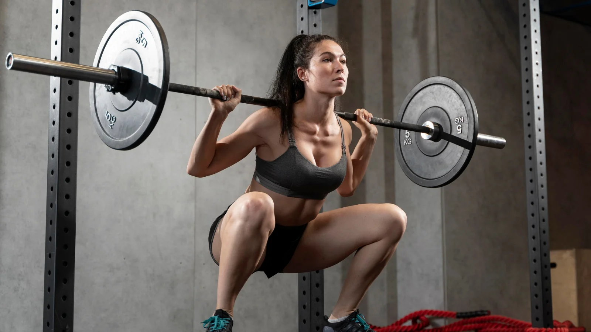

01
Treinamento Feminino & Fisiologia
Planejamento estruturado para hipertrofia harmônica, definição muscular e saúde metabólica, respeitando as particularidades anatômicas (ângulo Q, estabilidade pélvica) e variações hormonais do ciclo feminino.
- Controle de valgo dinâmico e estabilidade lombo-pélvica
- Periodização alinhada às fases do ciclo menstrual e climatério
- Ênfase estética segura sem sobrecarga articular desnecessária
- Prevenção de diástase e fortalecimento integrado do core
